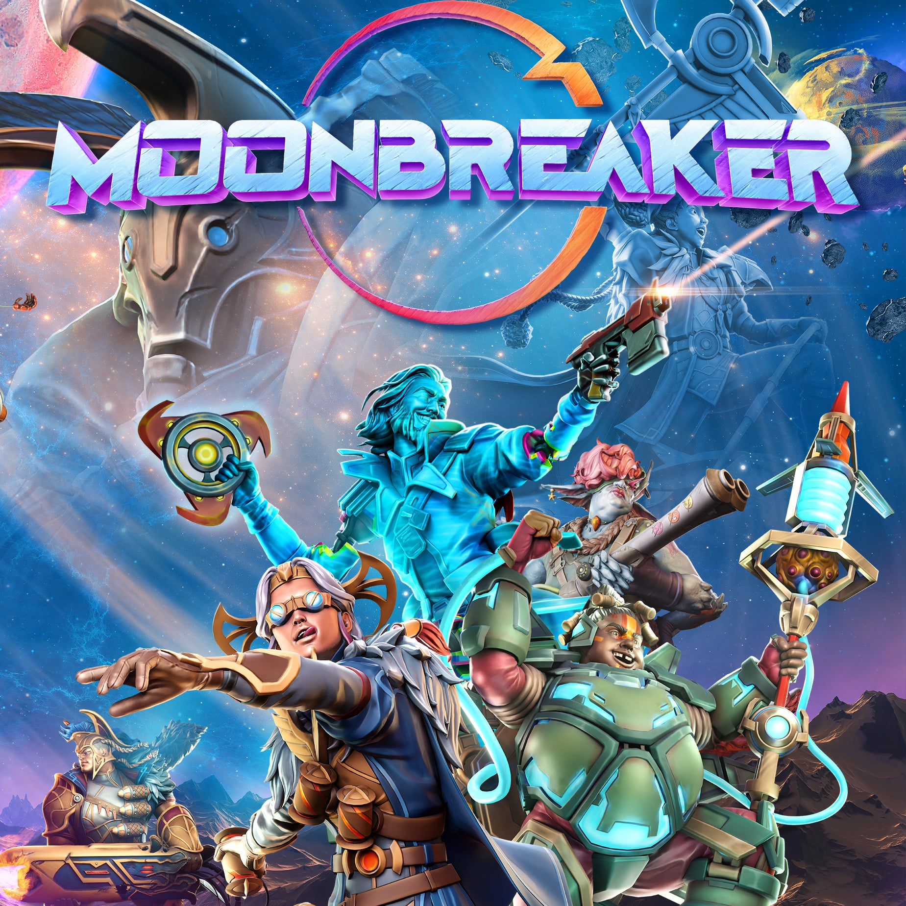
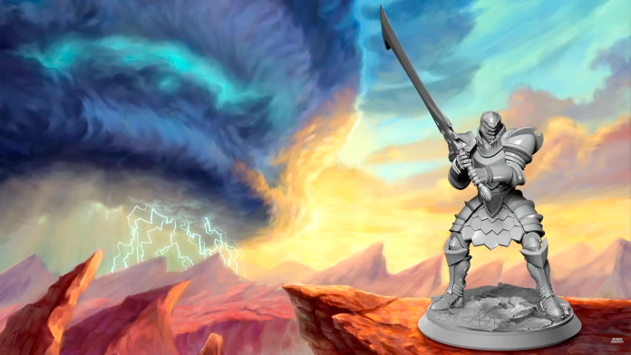

Según Sanderson, Unknown Worlds se dirigió a él con la oferta de ayudar a construir un mundo de ciencia y fantasía "optimista" para un juego que habían prototipado mecánicamente en su totalidad con el arte de los juegos anteriores del estudio. Sanderson respondió con dos propuestas, ambas desarrolladas por él mismo por separado, pero que no le parecían adecuadas para su universo Cosmere. Unknown Worlds eligió la más ambiciosa de las dos propuestas, Moonbreaker, y así nació una nueva colaboración.

Brandon Sanderson prepara un juego de rol
para
2024.
Brandon Sanderson es incombustible. El autor de fantasía siempre tiene algo en la cabeza, «siempre hay un secreto más». Como os comentamos hace poco se lanzó un nuevo Kickstarter relacionado con el Archivo de las Tormentas, la obra magna de Sanderson. En este caso no era un libro sino miniaturas como las de Warhammer u otros tantos juegos. A día de hoy, con solo unos 8 días desde su lanzamiento, lleva más de 2 millones de dólares de los 50 mil que pedía.
